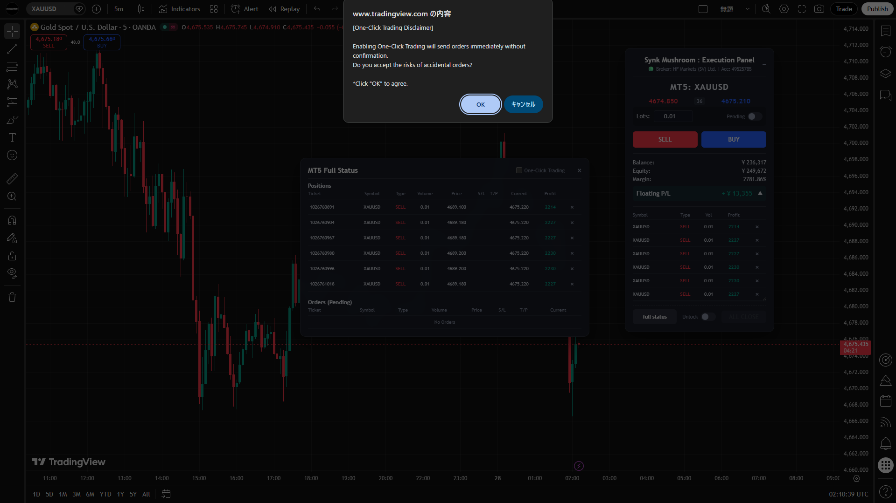

複数のアプリケーションと
ローカル操作を、ひとつに統合。
Synk Mushroomは、複数のアプリケーション環境における画面操作や入力処理を統合し、
ユーザー自身の判断に基づくスムーズなPC操作を支援するデスクトップユーティリティです。
分散したウィンドウによる遅延
複数のアプリケーションを同時に操作する際、画面間での視線移動、マウスの移動、ウィンドウのアクティブ化などの物理的なステップが、思考と入力の間に遅延を生み出しています。
視点移動のロス
情報確認用ディスプレイから操作用ディスプレイへの頻繁な視点移動が疲労と遅れを招きます。
入力手数の増加
ソフトウェア間の連携がないため、同種の入力を複数回に分けて行う必要があります。
判断から入力までの遅滞
ユーザーが判断を下してから、それをPC上のソフトウェアに反映させるまでに時間がかかります。
環境のシームレスな統合
Synk Mushroomは、これらの物理的な操作の障壁を取り除くためのユーティリティです。
ユーザーの手動操作をトリガーとして、ローカルアプリケーションのウィンドウ制御と
入力処理を統合的かつスムーズに処理されます。
テクニカル・フィーチャー
操作性を向上させるための技術的アプローチ
ウィンドウ制御
対象となるアプリケーションのウィンドウ状態を認識し、最適な位置への配置や最前面表示を制御します。必要な情報と操作パネルを常に視界内に保ち、クリックのための画面切り替えを不要にします。
入力処理の最適化
キーボードやマウスからの入力イベントをフックし、定義したキーバインドに基づいてバックグラウンドのアプリケーションへ操作シグナルを転送。カーソル移動を伴う操作をシンプルな入力へ置換します。
純粋なローカル処理
すべての操作統合とウィンドウ制御は、ユーザーのローカルPC内で完結します。操作内容を外部サーバーへ送信しないため、ネットワーク遅延の影響を受けないレスポンスの高い環境を提供します。
本ソフトウェアはローカルプロセスとして動作し、ユーザーの明示的な操作入力をトリガーとして機能します。常時外部サーバーとの通信は行わず、自律的な判断や処理を行うロジックは含まれていません。
インターフェース




料金プラン
※ すべての決済はセキュリティ基準を満たした外部決済サービスを通じて行われます。
月額プラン
- ✓ 7日間無料トライアル
- ✓ 全機能へのアクセス
- ✓ 継続的なアップデート
年額プラン
- ✓ 7日間無料トライアル
- ✓ 全機能へのアクセス
- ✓ 継続的なアップデート
- ✓ 月額換算でお得
買い切りプラン
- ✓ 永続ライセンス
- ✓ 全機能へのアクセス
- ✓ メジャーアップデート対応
導入ステップ
アカウント登録
Webサイトからメールアドレスを登録し、アカウントを作成します。
プラン選択・決済
希望のプランを選択し、外部決済サービスにて手続きを完了させます。
ソフトウェア取得
マイページよりインストーラーをダウンロードしインストールします。
ローカル設定
対象のウィンドウやキーバインドを設定して利用を開始します。
よくあるご質問
いいえ。本ソフトウェアに自動化、bot、AIによる判断機能などは一切搭載されていません。ユーザー自身の物理的な手動操作があって初めて動作するインターフェースツールです。
起動時のライセンス有効性確認およびアップデート確認のためにのみ通信を行います。操作内容やデータが外部へ送信されることはありません。
本ソフトウェアは、OS上で動作する一般的なウィンドウアプリケーションを対象とします。
例として、ブラウザベースの分析ツール（例：TradingView）の画面配置と、ローカルアプリケーション（例：MetaTrader 5）の操作入力を配置や操作の効率化を補助する用途などにご利用いただけます。
本ソフトウェアは外部サービスと直接接続するAPI機能は提供していません。OS上のウィンドウ操作と入力補助に限定されたローカルツールです。
本ソフトウェアは特定の用途に限定されず、複数のアプリケーションを扱う環境で操作性を向上させるための汎用ユーティリティです。
コンプライアンスと免責事項
- - 本製品は、ローカルPC環境におけるアプリケーション間の操作性を向上させるための汎用ユーティリティソフトウェアです。
- - いかなる形においても、金融商品取引法に基づく投資助言、データ提供、投資運用、またはそれに類するサービスを提供するものではありません。
- - 本ソフトウェアには、市場の優位性を高める機能、利益を保証する機能、または取引処理を自動化・代行する機能（EA、自動売買bot等）は一切含まれていません。
- - 連携先アプリケーションに対する操作の入力およびソフトウェアへの反映は、すべてユーザーご自身の完全な判断と責任において実行されます。
- - 本ソフトウェアの利用、設定の誤り、または利用不能によって生じたいかなる直接的・間接的な損害についても、開発者およびOichi Equipmentは一切の責任を負いません。
- - 本ソフトウェアは金融市場データの提供、注文処理、またはブローカーとの直接的な通信機能を提供しません。
第1条（目的と適用）
本規約は、ユーザーと当社との間の「Synk Mushroom」（以下、「本ソフトウェア」）の利用に関わる一切の関係に適用されます。
第2条（本ソフトウェアの性質と禁止事項）
- -本ソフトウェアは、ユーザーのローカルPC環境における操作性の向上を目的とするユーティリティツールです。投資助言や金融データの提供を行うものではありません。
- -ユーザーは、本ソフトウェアを利用して、他社システムへの不正アクセス、または過度な負荷をかける行為を行ってはなりません。
- -ユーザーは、本ソフトウェアを利用したすべての操作入力およびその結果について、自己の責任を負うものとします。
第3条（免責事項）
- -当社は、本ソフトウェアの安全性、信頼性、正確性、完全性、有効性、特定の目的への適合性について明示的にも黙示的にも保証いたしません。
- -当社は、本ソフトウェアの使用または使用不能に起因して生じたあらゆる損害について一切の責任を負いません。
- -ユーザーの操作ミス、ネットワーク障害、OS等のアップデートに起因する不具合によって意図しない動作が生じた場合でも、当社は補償を行いません。
Oichi Equipment（以下、「当社」）は、提供するソフトウェア「Synk Mushroom」および関連サービスにおけるユーザーの個人情報の取り扱いについて、以下のとおり定めます。
1. 収集する情報
アカウント作成時のメールアドレス、氏名、外部決済サービスを介して提供される一部の決済情報（クレジットカード番号自体は保持しません）、および本サービスの稼働状況・エラーログ等の技術的データ。
2. 利用目的
本サービスの提供・運営、ライセンス管理、カスタマーサポート対応、セキュリティの維持および不正利用の防止のため。
3. 第三者への提供
法令に基づく場合を除き、あらかじめユーザーの同意を得ることなく個人情報を第三者に提供しません。ただし、決済処理のための外部決済サービス等、業務委託先は除きます。
買い切りプラン：購入申し込み時に一括決済。
・月額/年額プラン：解約はいつでも可能。解約後の日割り計算等の返金はいたしません。
・買い切りプラン：購入後のキャンセル・返金不可。